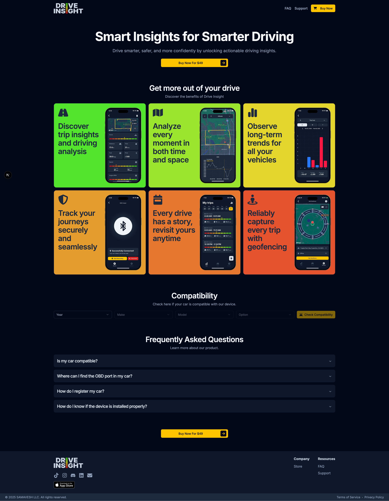
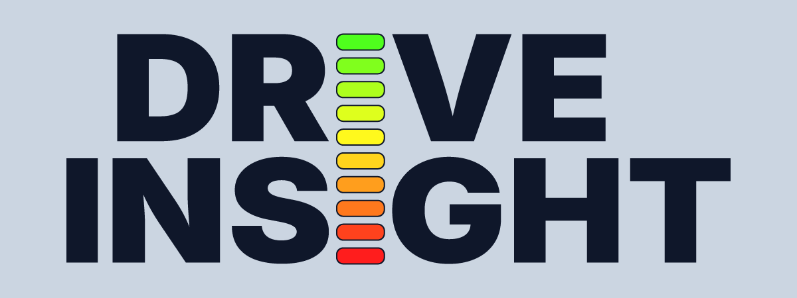
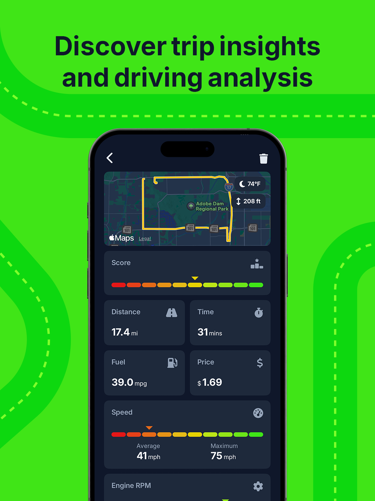
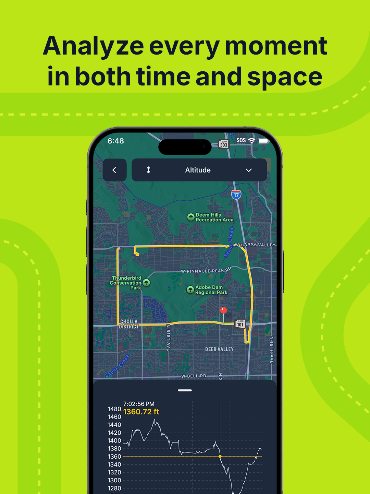
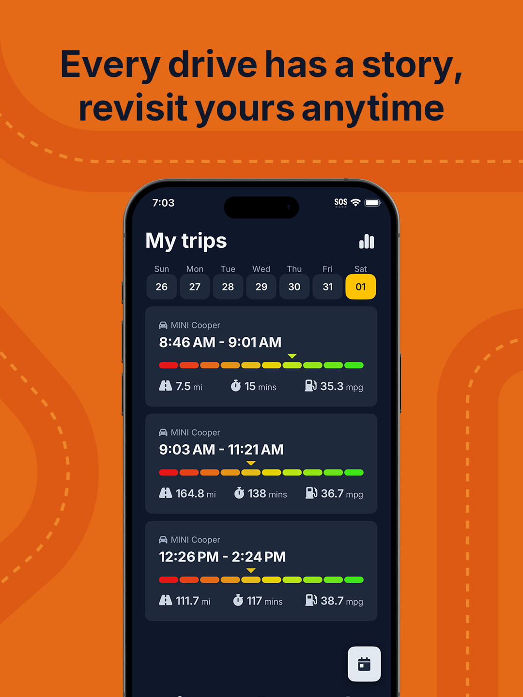
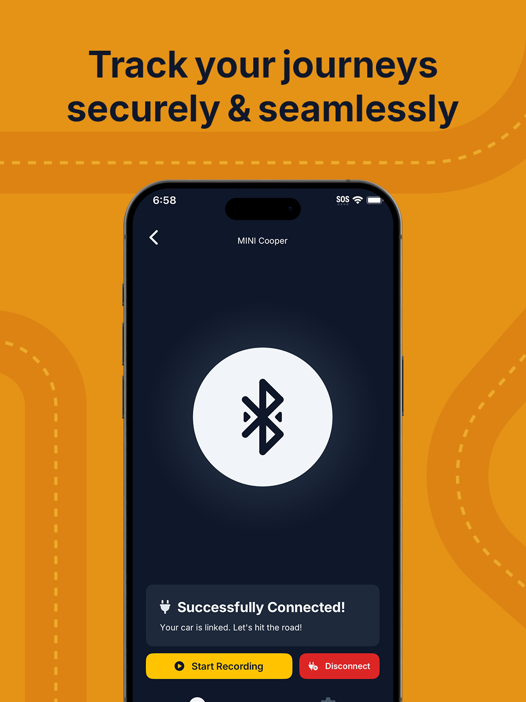
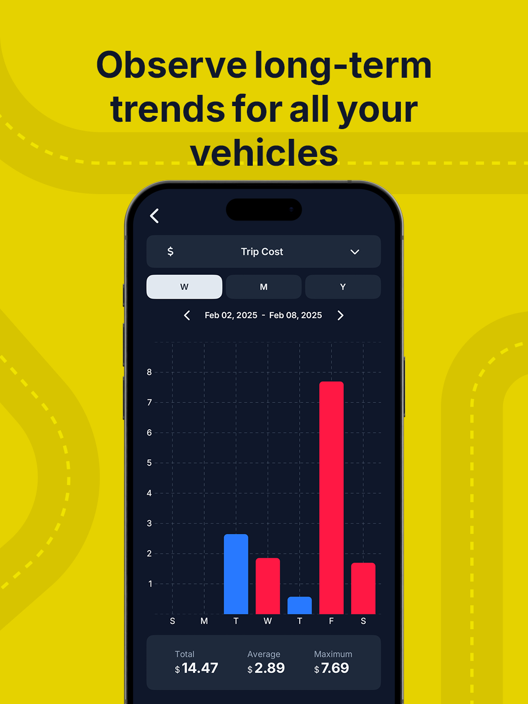
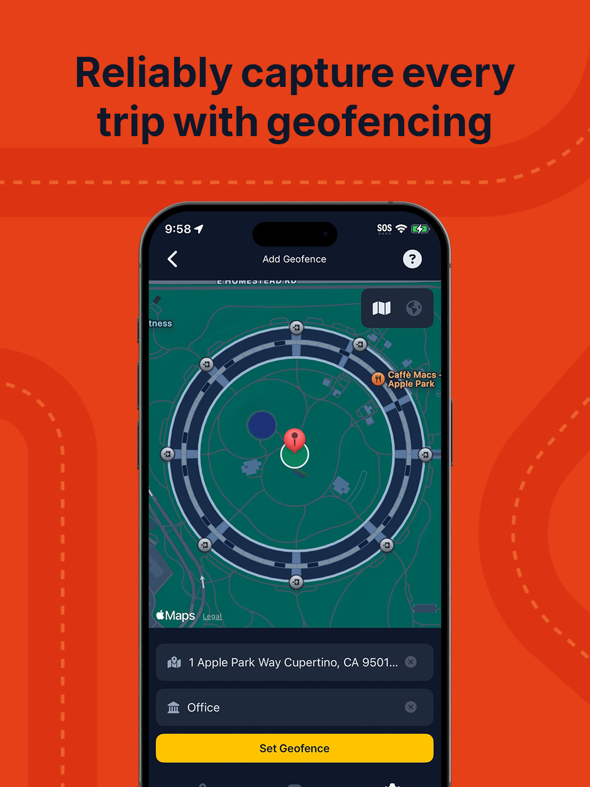
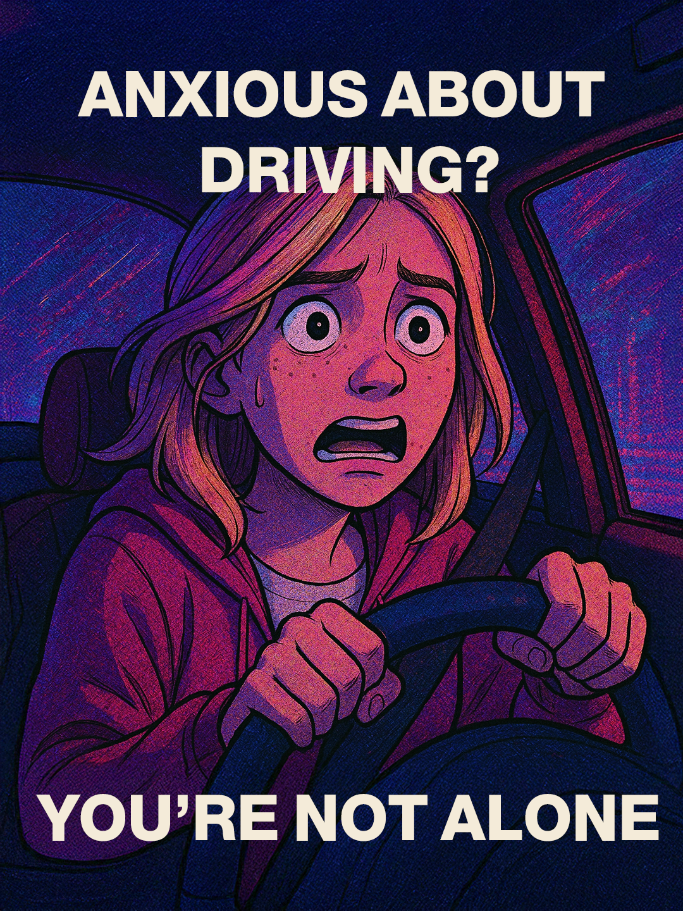

A consumer app that turns OBD2 telemetry into a story a driver can actually follow. As solo founder I owned every design decision: brand system, product UI, and marketing site. The product's core feedback mechanism doubles as the logo.

Modern cars stream hundreds of signals every trip (fuel efficiency, throttle and brake patterns, engine health), but consumer vehicles surface almost none of it in a form the driver can use. The market had OBD2 readers and generic dashboards, but nothing designed to help an individual driver understand their own behavior behind the wheel. Drive Insight closes that gap: a mobile app that aggregates car data and presents it through clear hierarchy and deliberate information architecture. The goal was simple: make the data matter to the person driving.
The brand is built on one idea: the product's core feedback mechanism is also its logo. A ten-step gradient, running red through orange, yellow, and green, scores every moment of driving behavior (acceleration, braking, cornering, speed) inside the app. That same scale replaces the stem of each letter I in the "DRIVE INSIGHT" wordmark, so the identity and the product speak the same visual language. The palette centers on deep slate navy, with a cool near-white for contrast and a warm golden yellow reserved for primary CTAs. Typography is Inter, a neutral backbone that lets the gradient scale do the expressive work. On launch, the scale stands alone as the app splash, reinforcing the metaphor before the first screen even loads.

The app is built on progressive disclosure. A guided setup (garage, VIN registration, Bluetooth pairing) happens before any recording starts, so the first real screen is never a cold dashboard. Once active, each trip opens with a single score on the gradient scale and a handful of at-a-glance stats: distance, time, fuel economy, cost, speed. Drilling in reveals the signature view: an interactive route map paired with a speed-over-time chart, where scrubbing the chart moves a marker along the route so temporal and spatial context stay locked together. A weekly trip list surfaces patterns across drives; a trends view lets users roll those up into long-term cost and efficiency views across multiple vehicles. Geofencing closes the loop by starting and ending trips automatically, so the data stays honest without the driver needing to think about it.






The go-to-market story ran on three parallel tracks. The first was personal optimization: six App Store cards, each pairing a short promise with a real screen on a saturated background drawn from the gradient scale (shown above in Product UI). The second was data autonomy, rooted in Mozilla Foundation research on how car manufacturers collect extensive telemetry and sell it downstream while giving owners nothing in return. Drive Insight inverted that dynamic and positioned the app as a way for drivers to reclaim their own data; the marketing site compresses both angles into a single scroll. The third was empathy: a social variant aimed at new and anxious drivers, leaning on the idea that understanding your own driving is the fastest way to build confidence behind the wheel.

The most useful decision was refusing to separate the brand from the product mechanic. Once the scoring scale became the wordmark, every other design choice fell out naturally. The hardest part was restraint: OBD2 exposes a lot of data, and every screen was a fight against surfacing too much of it. Drive Insight is on ice while I work on other things, but the system is intact. If I pick it back up, the next move is a real onboarding flow and a test of whether the privacy pitch actually lands with non-technical drivers.